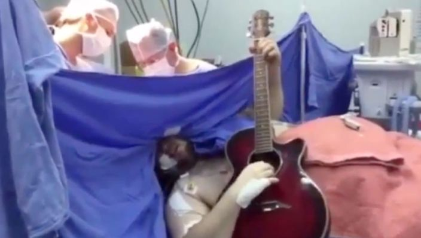

Man speelt gitaar tijdens eigen hersen operatie

De 37-jarige Abhishek Prasad leed aan dystonie, een neurologische aandoening waardoor sommige spieren spontaan samentrokken. In het geval van Prasad ging het om drie van zijn vingers.
Prasad moest zijn instrument blijven gebruiken zodat artsen konden vaststellen welk gedeelte van zijn hersenen aangepakt moest worden. Volgens het ziekenhuis was het slechts de achtste keer dat zo'n operatie is uitgevoerd terwijl de patiënt bij bewustzijn was.
"Een gat van 14 millimeter werd in zijn schedel geboord waarna een electrode in zijn hersenen werd aangebracht", stellen de doktoren. Wel werd een gedeelte van Prasads hoofd verdoofd. De operatie werd succesvol uitgevoerd, wel moet de man nog enige tijd herstellen.
Diagnose
Prasad was eerder bij meerdere ziekenhuizen geweest om een oplossing voor zijn aandoening te vinden, maar hem werd steeds verteld dat er geen diagnose gesteld kon worden. Uiteindelijk kwam hij bij het Bengaluru's Bhagwan Mahaveer Jain ziekenhuis terecht, waar hij dus wel is geholpen.
"Het was een erg emotioneel moment voor mij en mijn familie. Dit is waar ik op heb gewacht", aldus Prasad. De man had zijn baan in de IT opgegeven om muzikant te worden, maar kon door de aandoening niet langer dan vijf minuten op zijn gitaar spelen.